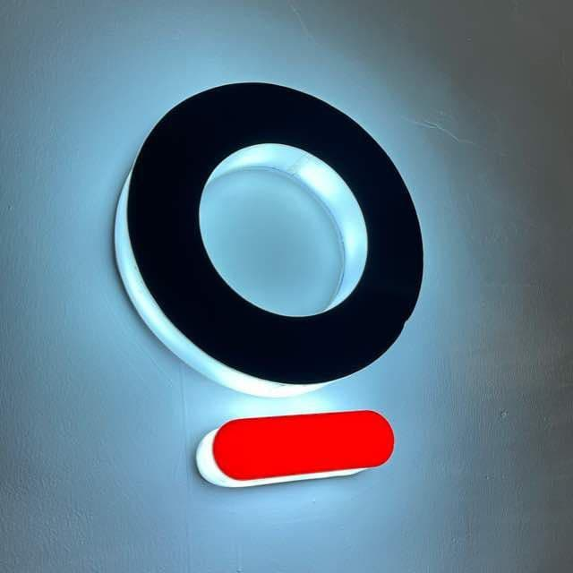

THE INTERN WHO PLAYED EXTRA TIME

If you are like me, a football lover, then I’m sure you are here because of the title. Clickbait right? Not really but hang on, don’t leave yet. Let me interest you in a little story. The story of my internship journey at The Sole Company LLC.
I am Gabriel Chukwu, a Computer Science undergrad at Covenant University. I am a game developer and for those of you familiar with The Sole Company, you might begin to see what’s wrong with that. Noticed yet? Alright let me tell you. The Sole Company is a Digital Agency whose major products are websites. Now you might be wondering how I got there in the first place, that would be a story for another time. I’m only here to share with you my experiences at TSC as an intern.
March 23rd, 2020 was precisely the day I began my internship at TSC and for the bulk of the time I interned from home( for reasons obvious to anyone not living under a rock in 2020). It was not until September of the same year (5 months into my 6 months internship program) that I stepped my foot into the office to work onsite. My first day onsite was somewhat nervous for me, I tried not to act awkwardly though. I bought bread and beans (popularly known as Ewa-Agoyin) for breakfast that morning and the whole office immediately took on the scent of my food and oh Lord, was I shy. That quickly passed and then my eyes were drawn to the PS4 in the lounge. I am a game lover and I wanted to play so badly, it was as though the game was calling out to me, “Play me Gabriel, make me your slave.”. The fact that it was a Monday made things even worst. Fast forward a few day later, I got the chance to play the game and I was so excited. This was all I dreamed of in school, an internship where I could play games at work. It was just the beginning.
Over the next few weeks, I came to work everyday and bought the same bread and beans. It had become so much of a staple food to me that a relationship developed between myself and the seller, such that one day I came to work after a break because of the #EndSars protest and she said “If I know say you dey come I for no sell the egg and pomo”. It still makes me laugh when I think of it. Coming to the office was not really convenient but I was always excited to walk in to meet and work alongside an exceptional team who eventually grew on me.
In my last week, I made a game for the company that has brought us all closer together as a team, and it seemed like my internship had come to an end, but no. Like a goat attracted to a piece of yam I kept coming back, I had grown accustomed to the place and they had grown to enjoy my stay there. I was playing extra time. The unique atmosphere that TSC offers all its members is just so amazing. It had enchanted me and it seems like I can no longer leave. On my own part I seemed to have been a positive influence on other members as they now chant my favorite saying - “Today is a great day” - with so much ease and joy.
In summary, I have had a beautiful time at TSC and even though I basically am overstaying my welcome, I am glad for the things I have learnt and am still learning and for the relationships I have been able to build up to this point. To my people at TSC, I love you all so much. You all have made an impact on my life that I can never forget, it is so hard to say goodbye and even though I am still playing the extra time, I do not mind if this extends to penalty shootouts. Thank you so much.